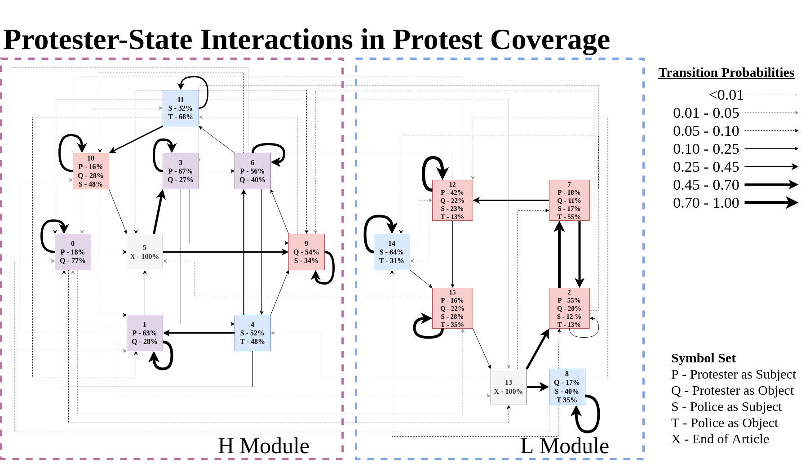

People v State
A Computational Study of Protest Narratives in Journalism
How does the media narrativize the protester-police interaction? How can we capture the structure of media narratives computationally? What features predict an article's narrative path?
American trust in mass media has been steadily declining for years, taking a large hit in the last few years with the election of Donald Trump. Meanwhile the nation has seen a surge in protests, with the Black Lives Matter movement potenitally the largest movement in US history by self-reported participation. Protests and the media have a tense relationship. Protesters seek media coverage to make an impact, but that coverage is more often sensational than legitimizing. When protests concern the rights of black and indigenous folks, this effect worsens.
Key to understanding both media skepticism and protest delegitimization is narrative; journalists are tasked with organizing rapidly evolving sets of facts into clear, digestible documents, and they accomplish this by encoding those facts in narrative. The lossy nature of this transformation opens the door to distrust, egged on by high-profile anti-media rhetoric. It also allows unconscious biases and hierarchies to slip through and inform the roles and relationships that the actors of interest are assigned.
With recent advances in natural language processing technology, academics have studied the characteristics and effects of media narratives at scale with document-level techniques like topic modelling and frames. But despite the deep humanities tradition of structuralist narrative theory that relates narrative to linguistics and the notion of a grammar, little work has been done to understand the syntactic, sequential qualities of narrative in journalism at a large scale. In other words, we've studied narrative content, but theory tells us deeper meaning lies in narrative form. This project attempts to access that deeper layer, operationalizing the actantial model from narrative theory through a classic pattern-detection technique, and applying it to a large corpus of protest-focused news articles with the aim of uncovering the latent structure informing the interplay of protesters and police.
When all goes according to plan, I get to produce cool diagrams like this:
and run cool classification and statistical tests that predict an article's path through the network. But alas, most of my time is spent fiddling with matplotlib.
This project was funded for summer 2020 by the ARIA program, for which I produced a poster (PDF) that you can check out for more information. A public github is forthcoming, and the research is being adapted into an academic paper.